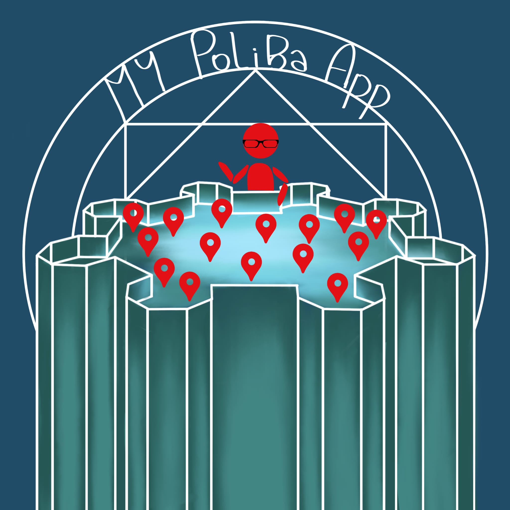

Francesco Petrarca (Arezzo, 20 luglio 1304 Arquà, 18/19 luglio 1374) è stato uno scrittore, poeta e filosofo
italiano, considerato il precursore dell'umanesimo e uno dei fondamenti della letteratura italiana, soprattutto
grazie alla sua opera più celebre, il Canzoniere, patrocinato quale modello di eccellenza stilistica da Pietro
Bembo nei primi del Cinquecento.
Uomo moderno, slegato ormai dalla concezione della patria come mater e divenuto cittadino del mondo, Petrarca
rilanciò, in ambito filosofico, l'agostinismo in contrapposizione alla scolastica e operò una rivalutazione
storico-filologica dei classici latini. Fautore dunque di una ripresa degli studia humanitatis in senso
antropocentrico (e non più in chiave assolutamente teocentrica), Petrarca (che ottenne la laurea poetica a Roma
nel 1341) spese l'intera sua vita nella riproposta culturale della poetica e filosofia antica e patristica
attraverso l'imitazione dei classici, offrendo un'immagine di sé quale campione di virtù e della lotta contro i
vizi. La storia medesima del Canzoniere, infatti, è più un percorso di riscatto dall'amore travolgente per Laura
che una storia d'amore, e in quest'ottica si deve valutare anche l'opera latina del Secretum.
Le tematiche e la proposta culturale petrarchesca, oltre ad aver fondato il movimento culturale umanistico,
diedero avvio al fenomeno del petrarchismo, teso ad imitare stilemi, lessico e generi poetici propri della
produzione lirica volgare dell'Aretino.
Leggi la voce · Tutte le voci in vetrina
dahdjaldjadladlhalhdlahdal
dasdadadadad
adasdadadad
dasdadadasda
dahdjaldjadladlhalhdlahdaldasada
adsadadadadasddsadadada
sadadadadadadaadada

STRUMENTO DI RICERCA